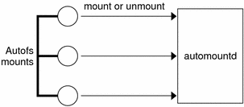
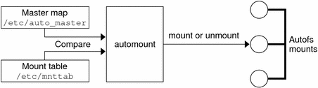

Previous
Previous
Mount Point /−
In Example 6-3, the mount point /- tells autofs not to associate the entries in auto_direct with any specific mount point. Indirect maps use mount points that are defined in the auto_master file. Direct maps use mount points that are specified in the named map. Remember, in a direct map the key, or mount point, is a full path name.
An NIS or NIS+ auto_master file can have only one direct map entry because the mount point must be a unique value in the namespace. An auto_master file that is a local file can have any number of direct map entries if entries are not duplicated.
Indirect Autofs Maps
An indirect map uses a substitution value of a key to establish the association between a mount point on the client and a directory on the server. Indirect maps are useful for accessing specific file systems, such as home directories. The auto_home map is an example of an indirect map.
Lines in indirect maps have the following general syntax:
key [ mount-options ] location
- key
key is a simple name without slashes in an indirect map.
- mount-options
mount-options is the options that you want to apply to this particular mount. These options are required only if the options differ from the map default. Options for each specific type of file system are listed in the mount man page for that file system. For example, see the mount_nfs(1M) man page for NFS-specific mount options.
- location
location is the location of the file system. One or more file systems are specified as server:pathname.
Note - The pathname should not include an automounted mount point. The pathname should be the actual absolute path to the file system. For instance, the location of a directory should be listed as server:/usr/local, not as server:/net/server/usr/local.
As in the master map, a line that begins with # is a comment. All the text that follows until the end of the line is ignored. Put a backslash (\) at the end of the line to split long lines into shorter ones. Example 6-3 shows an auto_master map that contains the following entry:
/home auto_home -nobrowse
auto_home is the name of the indirect map that contains the entries to be mounted under /home. A typical auto_home map might contain the following:
david willow:/export/home/david rob cypress:/export/home/rob gordon poplar:/export/home/gordon rajan pine:/export/home/rajan tammy apple:/export/home/tammy jim ivy:/export/home/jim linda -rw,nosuid peach:/export/home/linda
As an example, assume that the previous map is on host oak. Suppose that the user linda has an entry in the password database that specifies her home directory as /home/linda. Whenever linda logs in to computer oak, autofs mounts the directory /export/home/linda that resides on the computer peach. Her home directory is mounted read-write, nosuid.
Assume the following conditions occur: User linda's home directory is listed in the password database as /home/linda. Anybody, including Linda, has access to this path from any computer that is set up with the master map referring to the map in the previous example.
Under these conditions, user linda can run login or rlogin on any of these computers and have her home directory mounted in place for her.
Furthermore, now Linda can also type the following command:
% cd ~david
autofs mounts David's home directory for her (if all permissions allow).
Note - No concatenation of options occurs between the automounter maps. Any options that are added to an automounter map override all options that are listed in maps that are searched earlier. For instance, options that are included in the auto_master map are overridden by corresponding entries in any other map.
On a network without a name service, you have to change all the relevant files (such as /etc/passwd) on all systems on the network to allow Linda access to her files. With NIS, make the changes on the NIS master server and propagate the relevant databases to the slave servers. On a network that is running NIS+, propagating the relevant databases to the slave servers is done automatically after the changes are made.
How Autofs Works
Autofs is a client-side service that automatically mounts the appropriate file system. The components that work together to accomplish automatic mounting are the following:
The automount command
The autofs file system
The automountd daemon
The automount service, svc:/system/filesystem/autofs, which is called at system startup time, reads the master map file auto_master to create the initial set of autofs mounts. These autofs mounts are not automatically mounted at startup time. These mounts are points under which file systems are mounted in the future. These points are also known as trigger nodes.
After the autofs mounts are set up, these mounts can trigger file systems to be mounted under them. For example, when autofs receives a request to access a file system that is not currently mounted, autofs calls automountd, which actually mounts the requested file system.
After initially mounting autofs mounts, the automount command is used to update autofs mounts as necessary. The command compares the list of mounts in the auto_master map with the list of mounted file systems in the mount table file /etc/mnttab (formerly /etc/mtab). automount then makes the appropriate changes. This process allows system administrators to change mount information within auto_master and have those changes used by the autofs processes without stopping and restarting the autofs daemon. After the file system is mounted, further access does not require any action from automountd until the file system is automatically unmounted.
Unlike mount, automount does not read the /etc/vfstab file (which is specific to each computer) for a list of file systems to mount. The automount command is controlled within a domain and on computers through the namespace or local files.
The following is a simplified overview of how autofs works.
The automount daemon automountd is started at boot time by the service svc:/system/filesystem/autofs. See Figure 6-3. This service also runs the automount command, which reads the master map and installs autofs mount points. See How Autofs Starts the Navigation Process (Master Map) for more information.
Figure 6-3 svc:/system/filesystem/autofs Service Starts automountAutofs is a kernel file system that supports automatic mounting and unmounting.
When a request is made to access a file system at an autofs mount point, the following occurs:
Autofs intercepts the request.
Autofs sends a message to the automountd for the requested file system to be mounted.
automountd locates the file system information in a map, creates the trigger nodes, and performs the mount.
Autofs allows the intercepted request to proceed.
Autofs unmounts the file system after a period of inactivity.
Note - Mounts that are managed through the autofs service should not be manually mounted or unmounted. Even if the operation is successful, the autofs service does not check that the object has been unmounted, resulting in possible inconsistencies. A reboot clears all the autofs mount points.
How Autofs Navigates Through the Network (Maps)
Autofs searches a series of maps to navigate through the network. Maps are files that contain information such as the password entries of all users on a network or the names of all host computers on a network. Effectively, the maps contain network-wide equivalents of UNIX administration files. Maps are available locally or through a network name service such as NIS or NIS+. You create maps to meet the needs of your environment by using the Solaris Management Console tools. See Modifying How Autofs Navigates the Network (Modifying Maps).
How Autofs Starts the Navigation Process (Master Map)
The automount command reads the master map at system startup. Each entry in the master map is a direct map name or an indirect map name, its path, and its mount options, as shown in Figure 6-4. The specific order of the entries is not important. automount compares entries in the master map with entries in the mount table to generate a current list.
Figure 6-4 Navigation Through the Master Map